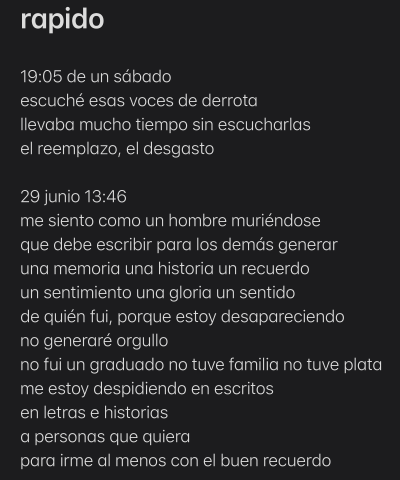
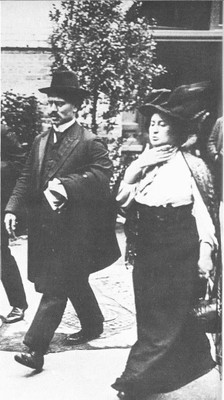

Hola, papu. Usualmente escribo fuera de WhatsApp cuando tengo que hacer un mensaje elaborado, por tanto este formato. Aparte que el tema no es ligero, es acerca del amor el cual como ya te debes estar dando cuenta, ejerce nuevas responsabilidades e impone su propia voluntad en nuestras vidas. No es cosa fácil, no es cosa ligera.
No te había respondido antes porque estuve unos meses en resignación. Me había rendido, se me había apagado la lucha de seguir y enfrentarme a la adversidad de mis condiciones. No te he contado, te actualizaré en corto: me metí en un instituto a estudiar acá. El instituto resultó ser de malísima calidad - en 1 mes llegabas a esforzarte académicamente menos de 10 horas y eso era todo. No tenía mucha gracia y duré un solo mes ahí. Tengo una sola alternativa disponible: sacarme la educación básica y media en Chile para buscar una universidad tradicional. Educación básica y media: sacarme de primer grado a quinto año, todo en exámenes libres que se hacen en dos periodos al año.
Llevo un año intentando volver a aprender las ciencias: matemáticas, física, química. Esto, trabajando 6 días a la semana, trabajando 16 horas más del máximo semanal. Mi progreso ha sido devastante para mi moral y esperanzas: sólo he podido avanzar algo en matemáticas, y hasta ahí. He repasado álgebra, funciones, y apenas llevo unos días tratando geometría/trigonometría, para que te des una idea. No me he acercado a cálculo, límites, nada. Todo esto en casi un año, sin contar el esfuerzo que me falta para luchar luego con física y química.
La realización de lo que me está costando, lo poco de energía que me va quedando, lo que no he ido a terapia, la poca voluntad que se me agota, las comparaciones que me atosigan. No tengo la cabeza en mis mejores facultades, y ya me estaba preparando en una larga despedida - usualmente expresado en lo escrito. Siempre que rebusco en mi teléfono o mi computadora encontraré algo con esa temática: una larga despedida.
El español es un lenguaje lindo, hermoso. Solía usar el inglés para escribir mis ideas, traducir lo que siento a lo escrito, asociar palabras con los escupitajos de mi lóbulo frontal. Pero ha llegado un punto en el que el inglés no basta; esa lengua extranjera ya no consigue abarcar todas las ideas - aquellas que no se explican, que no se exponen tan fácilmente, no se revelan solas ante la luz del día.
Por eso me he defendido la vida con el español estos últimos años: porque la lengua con la que nací me ha mantenido de pie. Porque me entiende y yo grato le devuelvo su favor soltándome, que me encuentre y me conozca.
Ahora con el amor, el español y las letras tocan tenerlas cerca como si fueran oxígeno. No puedo parar de escribir, le hago regalos a mis cercanos queridos compartiéndoles mi palabra escrita.
Se llama Daniela mi pareja, mi linda, mi querida. Nos conocimos hace dos años en una fiesta de Dios sabrá quién, un cumpleaños de alguien que no conocía pero fui invitado por unos amigos que por milagro llegué a conocer. Nos compartimos nuestras redes, en un intercambio tan corto como:
- Hola, estoy tratando de conocer personas. ¿Puedes compartirme tu Instagram?De ahí, nuestras interacciones eran unos 4 mensajes de Instagram trimestrales, pues éramos tímidos y no sabíamos cómo hablarnos. Por un muy buen tiempo estuvimos así: entre historias, pequeños mensajes, preguntas, interacciones chicas. Dos años, dos meses. Hasta que un día ya era mucho tiempo, y organizamos una salida para vernos, tomar un café.
Dos años, dos meses. Luego de muchos escritos, muchas palabras, charlas y cariños, ahora somos pareja desde el 19 de agosto. Ayer domingo 24 conocí a sus padres y nos presentamos como pareja.
Con el cariño que gracias al amor he encontrado en el español, entiendo a todos los enamorados. Comprendo a aquellos que se gastaron la energía que les quedaba luego de una pesada semana para hacerles un regalo creativo a su persona querida, amada. Comprendo a los intensos, a los atontados, a los que se les va el mundo por el amor. Me siento tan de buen ánimo que incluiré a un francés en mis escritos:
« Tu es entrée, par hasard, dans une vie dont je n’étais pas fier, et de ce jour-là quelque chose a commencé de changer. J’ai mieux respiré, j’ai détesté moins de choses, j’ai admiré librement ce qui méritait de l’être. Avant toi, hors de toi, je n’adhérais à rien. Cette force, dont tu te moquais quelquefois, n’a jamais été qu’une force solitaire, une force de refus. Avec toi, j’ai accepté plus de choses. J’ai appris à vivre. C’est pour cela sans doute qu’il s’est toujours mêlé à mon amour une gratitude immense. »Albert Camus a Maria Casarès, Correspondencia (1944 - 1959)
El afecto rebosa todavía más en el español, como Mistral hablando de su Doris. Gabriela Mistral: poeta chilena, educadora, figura de la literatura. Doris era su querida.
« Una sola carta he tenido yo, una. Pero es tan hermosa, tan lindamente escrita, que hace tres o cuatro días la llevo conmigo y no la romperé sin haber copiado las frases de ella que más me han confortado, removido. Cada vez que la saco de mi bolsillo, la beso, como si se tratase de un documento de vida o muerte. Y es que me aferro a esa lectura por creer, por tener fe, y por esperar. »Extractos de Doris, vida mía. Cartas
El amor permite revisar nuestras vidas y redescubrir el significado de la cotidianidad, nuestras pertenencias, nuestras maneras. La kuffiyah que llevaba meses sin usar, ahora pasó a ser la manta con la que nos sentamos en el pasto; mis escritos pasaron de ser descarga de pesadeces, a ser una oda al optimismo, a la vida; el amor transforma: mis días, mis tiempos, mis manos, mis metas. El amor transforma.
¿Y quién es uno, José, para rechazar tal fuerza - siquiera pensar que podemos?
¿Cómo te sientes con el amor? ¿Qué tal tu montaña rusa? Acá te muestro la mía. Yo no pensaba que iba a encontrar el amor, al menos en estos años que pesados los tendré y siempre pensé que me iba a poder defender con lo mismo:
« Nooo, yo no tengo tiempo para eso. Entre lo que trabajo y lo que estudio, imposible. »Lo que quiere llegar, llega. Caso omiso a voluntades e ideas ajenas - las cosas llegan. Oxígeno en el espacio; una flor en grieta de semáforo; SDLG en 2025 - las cosas llegan.
no importa lo que quieras,
ni lo mucho que te prepares.
no te mientas ni deformes, porque
las cosas llegan.
lo bueno y lo malo
viva cumpliendo sus
deseos esperas anhelos metas
en urgencia desvergonzada presencia
porque para el destino,
no importa lo que quieras:
aspiraciones de permanecer en algo
dejar en un lugares tu alma entera
no eres dueño de tu huella
ni de tus risas tus lágrimas
ni de los caminos tus pies y suelas
ni de tus pesares glorias dulces
memorias que sanan y que duelan
disfrute el segundo
el minuto la hora
viva el mundo, porque
las cosas llegan.
lo bueno y lo malo
no importa lo que quieras
que las cosas estén bien
que estén mal
que estén juntos aquí
y despedidas allá
vino, sangre
un último verano un último invierno
una primera cita
un regalo un afecto
un detalle sincero
viva el aire que todavía,
porque el tiempo reclama
y no distingue ni separa.
no importa lo que quieras,
de dónde seas,
lo que tengas.
sea sincero consigo mismo,
para bien y para mal,
porque de igual manera:
las cosas llegan.
Hay mil razones para amar; ahora imagínate para no hacerlo.
En este mundo moderno estamos saturados y se nos está yendo la vida. No sé cómo estará para ti, pero en estos últimos momentos de mi vida he sentido más que nunca el peso del tiempo. Quien se duerma se le va la existencia y toca ejercer esfuerzo activo para no desaparecer - qué desgracia es no poder permitirse flaquear; el día que no se escriba es como si no se hubiera existido, el día que no se haya ejercido lo creativo de sí, es un día que hubiese valido la vida igual que su ausencia.
Me estoy yendo incluso del tema: amor. El tema era el amor. Me deslizo.
¿No has pensado cosas nuevas? ¿Desarrollado nuevas ideas, observado desde nuevos ángulos? ¿No sientes ese aire fresco cuando respiras, aquel aire que te limpia los pulmones, te endulza los ojos, te abraza el alma?
Reconozco la cursilería, mas no me excuso de ella - le doy mi bienvenida y la comparto.
Amar es un acto político, amar es resistencia, sin importar los tiempos. Si hay algo que une a todas las parejas que se quieren, de todas las épocas y condiciones, hay un factor común entre todos nosotros: ejercer resiliencia - perseverar en nuestro lado sensible incluso en tiempos de dificultad, como Rosa Luxemburgo y el amor con su camarada y amado Leo Jogichès.
 Rosa y LeoRosa Luxemburgo (1871-1919) fue una figura de su tiempo: teórica marxista, filósofa, economista, y una fuerza líder de los movimientos socialistas en Europa. No he leído su teoría y relacionados, pero sí sus cartas y algo de su vida - me gusta chismear. Su vida fue de lucha y resistencia: ya sea por encarcelaciones por su propaganda antimilitar y antiimperalista, por promover huelgas y revolución. Ocultarse, escribir y publicar bajo seudónimos, ejercer su vida en clandestinidad - todo sin renunciar al amor.
30 de agosto 13:33 me duele la espalda auuu y tengo que trabajaaarQué lindo cómo el amor entorpece las palabras.
1 de septiembre, quizá no pueda escribir más. Lo siento, José. Iba a expandir esta sección, y tenía pensado escribirte algo decente (2000 palabras en adelante), pero mi tiempo ha sido limitado esta semana. Es difícil, en lo absurdo y lo ridículo, escribir estudiar ejercer el humano creativo con mi horario, mi tiempo. Lo siento nuevamente por retrasar la conversación - originalmente tenía pensado escribir esto en menos de 3 días, pero se me va el mundo.
Por favor me dices qué opinas, cómo te sientes en el amor, cómo te ves con tu pareja como compañera de vida en el largo plazo; cuéntame, escríbeme, estímulame el cerebro que tengo todo lleno de brainrot y tralalero tralala.
Y quizá escríbeme rápido, que probablemente les caiga una bomba el miércoles y me quede sin saber qué me ibas a decir.